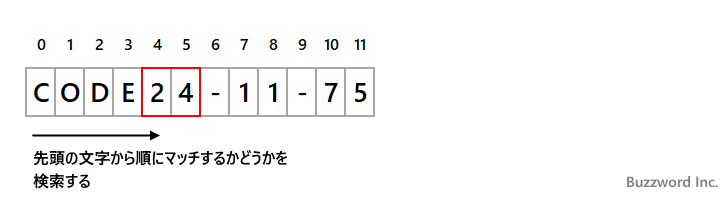
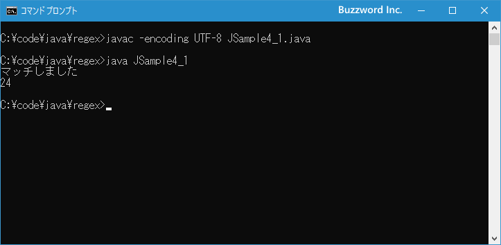
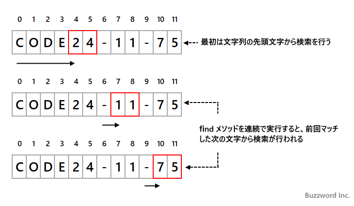

- Home ›
- Java入門 ›
- Java正規表現の使い方
文字列の中でパターンとマッチする部分があるか検索する(Matcher.find)
Matcher クラスの find メソッドは、対象の文字列の中でパターンとマッチする部分があるかを検索します。また find メソッドを実行してマッチした場合、もう一度同じ文字列に対して find メソッドを実行すると、前回マッチした部分以降の残りの部分でマッチするかを調べることができます。ここでは Java の正規表現で find メソッドを使って文字列の中でがパターンとマッチする部分があるか検索する方法について解説します。
findメソッドの使い方
Matcher クラスの find メソッドは対象の文字列の中でパターンとマッチする部分があるかを調べます。書式は次の通りです。
public boolean find()
戻り値:
入力シーケンスの部分シーケンスがこの正規表現エンジンのパターンとマッチした場合にのみtrue
対象の文字列の先頭文字から順に Matcher オブジェクトのパターンとマッチするか検索していきます。マッチすれば true 、そうでなければ false が戻り値として返ります。 matches メソッドの場合は文字列全体とマッチする必要がありましたが、 find メソッドの場合は文字列の中でパターンとマッチする部分があれば true を返します。
例えば、パターン文字列 "[0-9]{2}" で対象の文字列が "CODE24-11-75" だった場合、パターンは対象の文字列の一部とマッチするので true となります。

※ パターン文字列 "[0-9]{2}" は 数値が 2 つ続く文字列とマッチします。
次のサンプルを見てください。
// java.util.regex.*のインポートが必要です
import java.util.regex.*;
String regex = "[0-9]{2}";
Pattern p = Pattern.compile(regex);
Matcher m = p.matcher("CODE24-11-75");
System.out.println(m.find()); // true
パターン "[0-9]{2}" は "CODE24-11-75" の中の "24" の部分と最初にマッチするので true を返します。
それでは簡単なサンプルプログラムを作って試してみます。テキストエディタで次のように記述したあと、 JSample4-1.java という名前で保存します。
import java.util.regex.*;
class JSample4_1{
public static void main(String[] args){
String regex = "[0-9]{2}";
Pattern p = Pattern.compile(regex);
Matcher m = p.matcher("CODE24-11-75");
if (m.find()){
System.out.println("マッチしました");
System.out.println(m.group());
}
}
}
コンパイルを行います。
javac -encoding UTF-8 JSample4_1.java
その後で、次のように実行してください。
java JSample4_1

find メソッドを使ってパターンが対象の文字列にマッチするかどうか確認し、マッチした場合はマッチした文字列を画面に出力しました。(groupメソッドについては「パターンとマッチした部分文字列の情報を取得する」で解説します)。
findメソッドを連続して実行する
find メソッドを最初に実行したときは対象の文字列の先頭文字からマッチするか検索していきます。 find メソッドを実行してマッチしたあと、もう一度 find メソッドを実行すると、今度は文字列の先頭からではなく前回マッチした最後の文字の次の文字からマッチするかどうかを検索していきます。

find メソッドはマッチしなかった場合に false を返すので、対象の文字列の中でパターンが複数の箇所でマッチする場合に、順番にマッチした部分を取得するには次のように記述します。
// java.util.regex.*のインポートが必要です
import java.util.regex.*;
String regex = "[0-9]{2}";
Pattern p = Pattern.compile(regex);
Matcher m = p.matcher("CODE24-11-75");
while (m.find()){
System.out.println(m.group());
}
group メソッドは次のページで解説しますが、マッチした部分を戻り値として返すメソッドです。パターンが対象の文字列とマッチするかどうか調べ、マッチした場合はその次の文字から再びマッチするかどうかを調べます。文字列の最後まで到達し、マッチしなくなったら終了です。
なお検索の開始位置をリセットするには、これまで使っていた find メソッドとは引数の数が異なる次の find メソッドを使います。書式は次の通りです。
public boolean find(int start)
パラメータ:
start - マッチの検索を開始するインデックス
戻り値:
入力シーケンスの指定されたインデックス以降の部分シーケンスが、この正規表現エンジンのパターンとマッチした場合にのみtrue
例外:
IndexOutOfBoundsException - startがゼロより小さい場合、またはstartが入力シーケンスの長さより大きい場合。
1 番目の引数に、検索を開始するインデックスを指定します。例えば文字列の先頭から検索を行いたい場合は 0 を指定します。
それでは簡単なサンプルプログラムを作って試してみます。テキストエディタで次のように記述したあと、 JSample4-2.java という名前で保存します。
import java.util.regex.*;
class JSample4_2{
public static void main(String[] args){
String regex = "[0-9]{2}";
Pattern p = Pattern.compile(regex);
Matcher m = p.matcher("CODE24-11-75");
while (m.find()){
System.out.println(m.group());
}
}
}
コンパイルを行います。
javac -encoding UTF-8 JSample4_2.java
その後で、次のように実行してください。
java JSample4_2
find メソッドを使ってパターンが対象の文字列にマッチするかどうか確認し、マッチした場合はマッチした文字列を画面に出力しました。これを対象の文字列に対してマッチしなくなるまで繰り返します。
-- --
Java の正規表現で find メソッドを使って文字列の中でがパターンとマッチする部分があるか検索する方法について解説しました。
( Written by Tatsuo Ikura )

著者 / TATSUO IKURA
初心者～中級者の方を対象としたプログラミング方法や開発環境の構築の解説を行うサイトの運営を行っています。